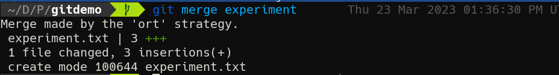
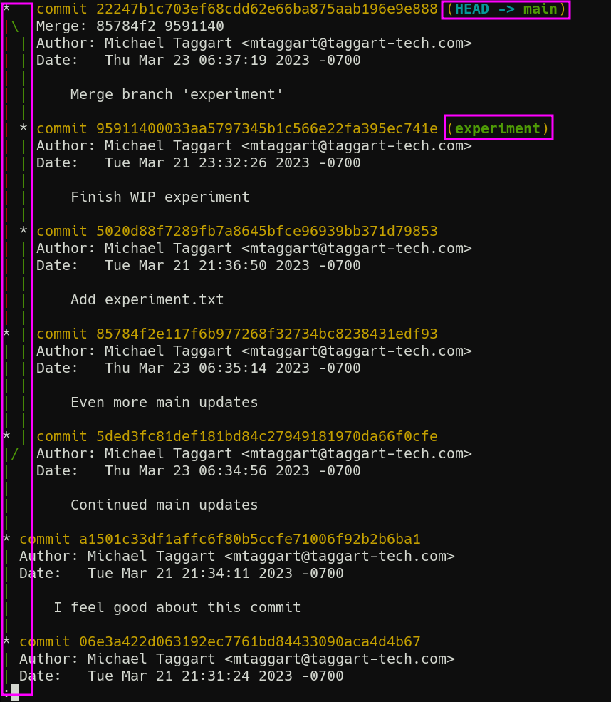
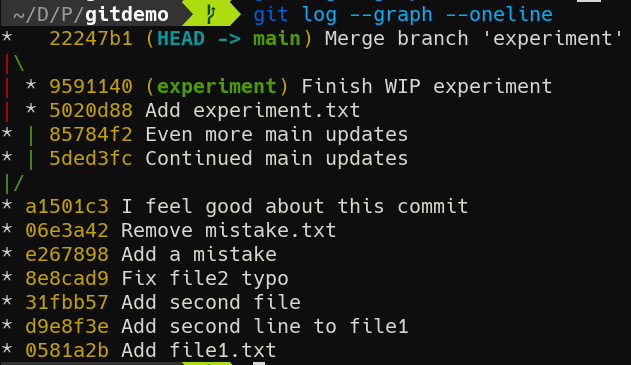
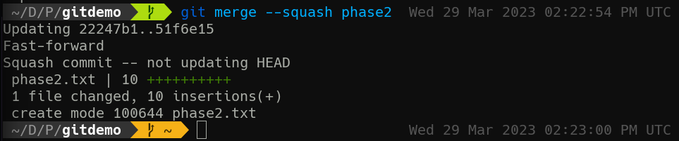

2-3: Merges
The time has come to bring our two branches together again. This usually occurs after a feature or fix has been completed and is ready to be introduced to a more primary branch. But how does git actually combine branches? This is a more complicated question than you might imagine, and in fact Git has multiple strategies it employs to merge branches, depending on the situation. But for now, we'll focus on the basics.
Thinking back to git diff and even the notices we see after commits, it's clear that Git can track files line-by-line. This linewise examination is how Git proceeds for plaintext files. When comparing two branches, it looks at each file with changes. If one branch has changes and the other does not, or if the changes are identical, the change is adopted. If both branches have a change at the same location and they do not match, then a merge conflict arises. We'll address conflict resolution a bit later.
Our First Merge
If you run git merge --help, you get a lovely ASCII-art diagram of diverging branches being recombined:
A---B---C topic
/ \
D---E---F---G---H main
An important point in this diagram is commits F and G. Notice that commits can continue to take place on the main branch while the topic branch does its thing.
Let's see if we can get that going with a couple of commits on main. Make sure you're on that branch before continuing.
git switch main
echo "The work goes on" >> file1.txt
git commit -am "Continued main updates"
echo "And on and on and on" >> file2.txt
git commit -am "Even more main updates"
Cool, we now have some parallel commits to our experiment branch. Now, we're ready for our first merge. The most basic version of the syntax is git merge <branch>, so:
git merge experiment
Since this is a commit, your editor will pop up for a commit message. We could have provided a -m, but I wanted you to see that a merge does indeed create a commit.

We get quite a bit of info following the merge. First, we're told the merge was made using the ort strategy. That's the default strategy, but there are others. We also see a list of files changed/added—in this case, experiment.txt was added with 3 lines.
Graphing Merges
In a world where commits can originate in multiple branches, it can be helpful to see where exactly a commit came from. There is a way to do this with git log.
First, try git log --graph. You'll see something like this:

I've highlighted the branch diagram, as well as the most recent commit on each branch which identifies the branch name. Although simplistic, this little diagram can tell us a lot about the history of our repo, and where a commit came from. But it is kind of a lot of text. Luckily, we can abbreviate it.
git log --graph --oneline

Much easier to read if you ask me.
git log has several additional options to help make the review process easier, like --limit, --since, and --until. Everyone has their preferences for how to use git log. Take some time to practice and find yours.
Squashing
For the next bit, it's time once again for a new branch. Let's make the phase2 branch and switch two it. This time we'll use git switch instead of git checkout, with the -c option, to create a new branch.
git switch -c phase2
Now, time for some commits! Here's a set of commands to quickly generate some commits.
touch phase2.txt
git add phase2.txt
git commit -m "Add phase2.txt"
bash -c 'for i in $(seq 10); do echo "Step $i" >> phase2.txt; git commit -am "Step $i"; done'
Now let's switch back to main.
But before we merge these commits, let's pause for a moment. Do we really need all those tiny commits in this merge? Do we need to preserve every single one? Or would it be enough to represent the work in phase2 as a single entity, and merge that.
We can do that with the --squash option. This will compress the many commits into change, apply it to the current working tree, but not execute the commit. You still need to review the changes first, and then you can make the commit.
git merge --squash phase2

You can see here that phase2.txt, all 10 lines of it, is added. However we're also told that as this is a "squash commit," HEAD will not be updated. That's why my Git status indicator turns gold, indicating I have staged changes. git status will show I have a new file staged. From here, as long as I'm happy with the results of the merge, I'm ready to commit.
git commit -m "Merge phase2"
Now, git log --graph --oneline will only show a single commit for all that effort. It won't even show a separate branch! This might be what you want, but it might not. Also note that if you switch over to the phase2 branch, the original commits are preserved in that branch's logs. You now have slightly different versions of history.
Personally, I don't like to squash commits unless it would be very messy (dozens of commits clogging up the log) to do otherwise. I prefer to be able to see exactly what got merged in my primary branch.
And now that we're done with the phase2 branch, we can delete it.
git branch -D phase2
Now that's how merges work when everything's going well. Up next, we'll cover what happens when things go wrong.